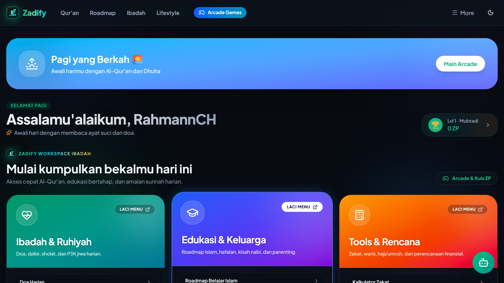
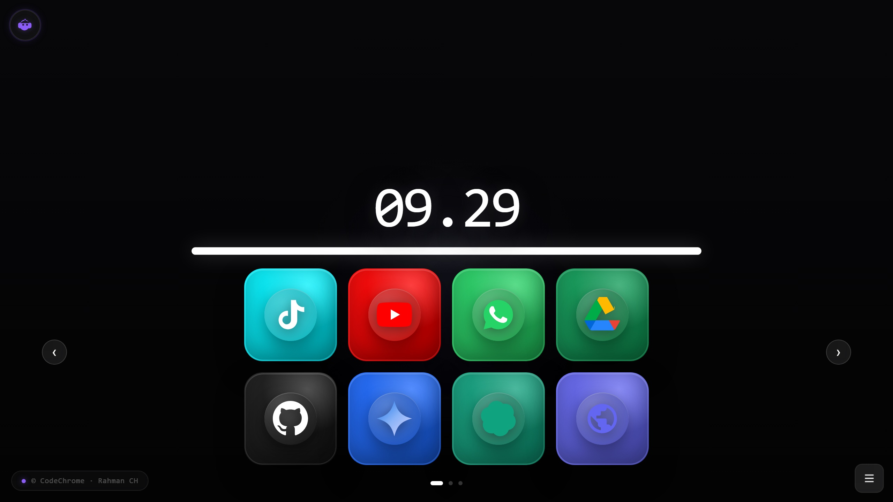
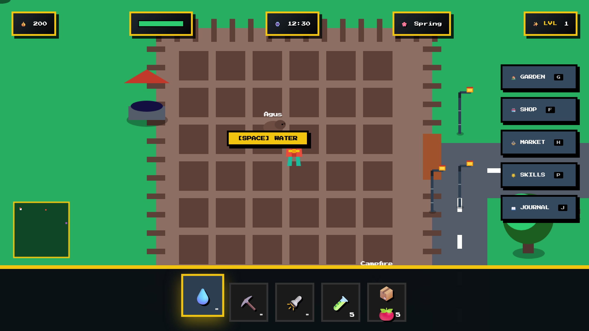
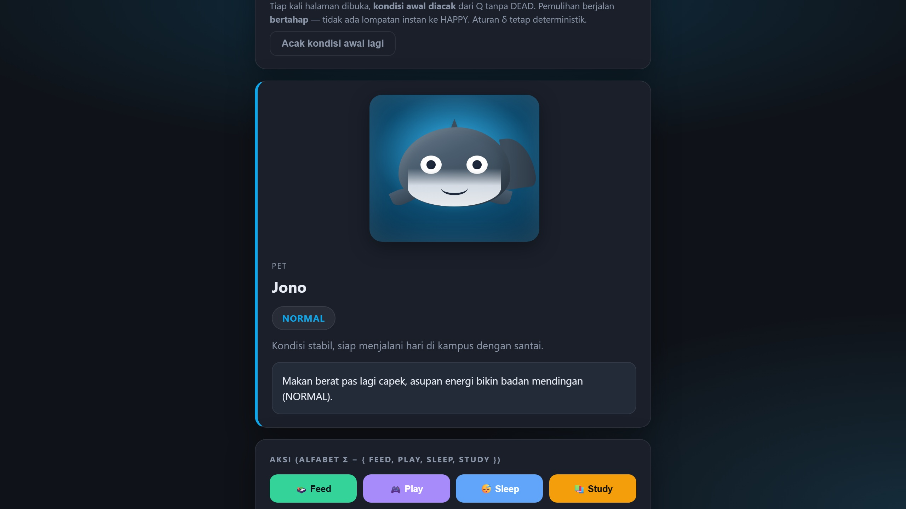

01WEB APP · TYPESCRIPT
Zadify
Ruang belajar Al-Qur’an dengan fitur audio, pendamping AI, dan kompas kiblat interaktif sesuai deskripsi proyek.
- TypeScript
- Web Audio
- Gemini AI
- Framer Motion
Mahasiswa Ilmu Komputer & Full-stack Developer
Membangun aplikasi web dan eksperimen interaktif, berangkat dari fondasi jaringan komputer hingga produk yang bisa dijelajahi langsung.
Label bisa diseret, atau fokuskan lalu gunakan tombol panah. Home untuk reset.

Tarik kartunya untuk memantulkan tali, atau fokuskan lalu tekan panah kiri dan kanan untuk mengayun.
KARYA PILIHAN · 01
Beberapa proyek dari repositori publik. Fitur dijelaskan berdasarkan dokumentasi proyek; angka dampak tidak dicantumkan tanpa pengukuran.

01WEB APP · TYPESCRIPT
Ruang belajar Al-Qur’an dengan fitur audio, pendamping AI, dan kompas kiblat interaktif sesuai deskripsi proyek.

02BROWSER DASHBOARD
Dashboard browser dengan pendekatan keyboard-first, audio feedback, dan fitur AI yang tercantum di README.

03
04Saya Muhammad Nur Rahman, mahasiswa S1 Ilmu Komputer di FMIPA Universitas Lambung Mangkurat. Sebelumnya, saya menempuh Teknik Jaringan Komputer dan Telekomunikasi di SMKN 1 Banjarmasin.
Minat saya mencakup pengembangan web, keamanan siber, sistem interaktif, dan cara teknologi dapat membantu orang menyelesaikan hal nyata. Saya juga aktif dalam kegiatan organisasi kampus dan public speaking.
Kirim emailBIDANG YANG SAYA TEKUNI · 03
Ringkasan berdasarkan proyek dan latar pendidikan. Bukan penilaian level formal.
TypeScript, JavaScript, React, Next.js, PHP, dan pengembangan UI web interaktif.
Fondasi TJKT, jaringan komputer, infrastruktur, dan edukasi keamanan digital.
Canvas, eksperimen 3D web, pengalaman browser, komunikasi visual, dan public speaking.
PENDIDIKAN & PENGALAMAN · 04
FMIPA · Universitas Lambung Mangkurat
Menempuh pendidikan Ilmu Komputer sambil mengeksplorasi pengembangan perangkat lunak dan kegiatan kemahasiswaan.
HIMAKOM Mengabdi
Portofolio mencatat pengalaman sebagai pemateri edukasi keamanan digital dan phishing defense.
EKSMUD BEM · RKIK · HIMAKOM Visit · Tapak Desa
Pengalaman yang tercatat mencakup magang bidang Kemasyarakatan dan Media Kreatif serta menjadi MC di kegiatan kampus.
SMKN 1 Banjarmasin
Fondasi pendidikan vokasi pada jaringan komputer dan telekomunikasi sebelum melanjutkan studi Ilmu Komputer.
TERHUBUNG · 05
Terbuka untuk diskusi proyek web, kolaborasi, dan kegiatan seputar teknologi.